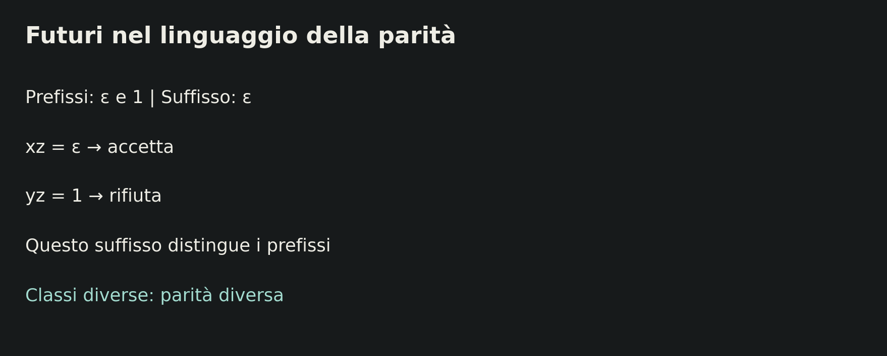

Linguaggi regolari e problemi di decisione
Linguaggi regolari e problemi di decisione
VVT · Lezione 2 · Capitolo 2
Nel capitolo 1 abbiamo introdotto gli automi a stati finiti: un modello operazionale che descrive come scansionare una parola passo dopo passo.
Questo capitolo introduce tre prospettive complementari:
- Sintassi algebrica (dichiarativa): le espressioni regolari e l’equivalenza di Kleene.
- Composizione modulare: le proprietà di chiusura booleana (unione, intersezione, complemento).
- Verifica algoritmica: i problemi di decisione (inclusione, vuotezza, equivalenza).
Conclude la prospettiva di Myhill–Nerode: quanti stati servono davvero e qual è il DFA canonico minimo.
Filo conduttore: la riduzione di quesiti semantici complessi a controlli di raggiungibilità su grafo.
Richiamo: accettazione su parole finite
Un DFA ha una sola run per ogni parola; un NFA può averne nessuna, una o molte.
Una parola è accettata se almeno una run termina in uno stato finale in F, dopo aver consumato l’intero input:
L(\mathcal{A})\subseteq\Sigma^*
- \Sigma indica l’alfabeto di lavoro (spesso \{0,1\} o un insieme di eventi del sistema).
- \varepsilon denota la parola vuota (|\varepsilon|=0).
- Il complemento \overline{L}=\Sigma^*\setminus L è sempre relativo all’alfabeto dichiarato \Sigma.
Dalla macchina alla formula: sintassi dichiarativa
Disegnare un automa è un atto operazionale: descrive cosa fa la macchina a ogni passo di computazione, non come è fatta la parola.
Per specificare proprietà, interrogare tracce e comporre requisiti, è preferibile una sintassi algebrica e dichiarativa: le espressioni regolari.
Le espressioni ristrette su \Sigma partono dai casi atomici:
\varnothing,\qquad \varepsilon,\qquad a\in\Sigma
e si compongono induttivamente tramite:
r+s \quad\text{(unione)},\qquad rs \quad\text{(concatenazione)},\qquad r^* \quad\text{(stella di Kleene)}
Precedenza: la stella precede la concatenazione, che precede l’unione. Le parentesi sciolgono le ambiguità.
Semantica delle espressioni regolari
La semantica associa a ogni espressione regolare r il linguaggio formale L(r)\subseteq\Sigma^*:
L(\varnothing)=\varnothing,\quad L(\varepsilon)=\{\varepsilon\},\quad L(a)=\{a\}
L(r+s)=L(r)\cup L(s)
L(rs)=L(r)L(s),\qquad L(r^*)=L(r)^*
\varnothing denota il linguaggio vuoto (nessuna parola); \varepsilon denota il linguaggio contenente solo la parola vuota (\{\varepsilon\}\neq\varnothing).
La stella r^* ammette sempre zero o più ripetizioni finite, quindi \varepsilon\in L(r^*) per qualsiasi espressione r.
Esempi di espressioni: suffisso e parità
(0+1)^*01
Descrive le parole che terminano con 01: accetta 01, 1101; rifiuta ε, 010.
0^*(10^*10^*)^*
Descrive le parole con un numero pari di 1: ogni blocco ripetuto contribuisce due 1. Sono incluse ε e tutte le parole composte solo da 0.
L’espressione descrive la struttura della parola; il DFA descrive come scansionarla.
Esempio guida: la sessione dell’editor
Nel nostro monitor software per un editor di testo, l’alfabeto di eventi è \Sigma_{\mathrm{edit}}=\{\texttt{apri},\texttt{modifica},\texttt{salva},\texttt{chiudi}\}.
La proprietà delle sessioni finite corrette si scrive direttamente come espressione regolare ristretta:
r_{\mathrm{sessione}}=\texttt{apri}\;(\texttt{modifica}+\texttt{salva})^*\,\texttt{chiudi}
I tre blocchi riflettono il ciclo vitale del documento: 1. Inizio: apertura del documento una sola volta; 2. Lavoro: sequenza arbitraria finita di modifiche e salvataggi; 3. Termine: chiusura ordinata del file.
DFA ed espressione regolare specificano lo stesso identico insieme di tracce a due livelli di astrazione complementari: macchina a stati vs specifica dichiarativa.
Espressioni generali e star-free
Le espressioni generali aggiungono intersezione e complemento direttamente nella sintassi:
L(r\cap s)=L(r)\cap L(s),\qquad L(\overline{r})=\Sigma^*\setminus L(r)
Le espressioni star-free ammettono questi operatori booleani, ma vietano la stella: nessuna iterazione libera.
Gerarchia espressiva: - Generali = Ristrette: i connettivi booleani sono una comodità sintattica, ma non aumentano il potere espressivo (si compilano via automi). - Star-free < Ristrette: le star-free definiscono una classe strettamente più piccola (i linguaggi aperiodici / logica del primo ordine). Non possono contare modulo una costante (la parità non è star-free).
L’obiettivo di equivalenza: il Teorema di Kleene
Qual è il legame fondamentale tra la sintassi dichiarativa delle espressioni e il modello a stati degli automi?
Teorema di Kleene: Un linguaggio L\subseteq\Sigma^* è riconosciuto da un automa a stati finiti se e solo se è denotato da un’espressione regolare ristretta.
Il risultato fornisce due concreti motori algoritmici: 1. Motore di compilazione (Espressione \to Automa): assemblaggio strutturale di sotto-automi tramite mosse silenti (costruzione di Thompson). 2. Motore di estrazione (Automa \to Espressione): eliminazione graduale degli stati tramite programmazione dinamica.
Nella verifica software, Kleene assicura che possiamo alternare liberamente specifiche dichiarative e monitor a stati eseguibili.
La sfida della compilazione: le transizioni ε
Per compilare un’espressione r in un automa A_r, dobbiamo comporre ricorsivamente le macchine dei sotto-termini per r+s, rs e r^*.
Comporre direttamente automi rigidi richiederebbe di ricablare a mano ogni transizione entrante negli stati finali del primo componente.
Per rendere modulare l’assemblaggio, introduciamo un connettore ideale: la transizione \varepsilon (mossa silente).
Una transizione \varepsilon cambia stato senza consumare simboli e senza far avanzare la testina di lettura sull’input.
Transizioni ε e composizione
Per concatenare gli automi per \{0\} e \{1\}, colleghiamo l’uscita del primo all’ingresso del secondo con un arco \varepsilon.
Non serve riprogettare gli stati interni: il controllo salta al secondo automa in modo asincrono.
Solo l’uscita dell’ultimo frammento resta accettante; la freccia esterna indica l’iniziale.

Chiusura ε come punto fisso
\operatorname{ECl}(S) contiene tutti gli stati raggiungibili da S seguendo zero o più transizioni \varepsilon.
Si calcola come punto fisso della sequenza crescente:
X_0=S,\qquad X_{i+1}=X_i\cup\bigcup_{q\in X_i}\Delta(q,\varepsilon)
L’algoritmo si arresta quando X_{i+1}=X_i. Nel diagramma precedente:
\operatorname{ECl}(\{u\})=\{u,v\}
Proprietà fondamentale: S\subseteq\operatorname{ECl}(S) sempre (cammino nullo di zero passi \varepsilon).
Simulazione di un ε-NFA
In un \varepsilon-NFA, l’insieme degli stati attivi si espande con la chiusura \varepsilon prima di iniziare e dopo ogni simbolo letto:
- In Parola scegli
01; Letti conta i simboli consumati, da0a2, inizialmente0. - A
0l’insieme attivo è \{s\}. A1diventa \{u,v\}: è stato consumato solo0. - A
2rimane \{f\} e la parola è accettata. - Scegli
0: il cursore si azzera e il massimo diventa1. Al termine \{u,v\} non contiene finali.
Il caso ε termina subito in \{s\} ed è rifiutato.

Eliminare le transizioni ε
Manteniamo gli stati Q, ma ogni passo ordinario assorbe i passi \varepsilon precedenti e successivi:
\Delta'(q,a)=\operatorname{ECl}\left(\bigcup_{p\in\operatorname{ECl}(\{q\})}\Delta(p,a)\right)
Nell’esempio: \Delta'(s,0)=\{u,v\} e \Delta'(u,1)=\{f\}.
Il nuovo NFA legge solo simboli reali. Va controllata separatamente l’accettazione della parola vuota.
Eliminazione ε: il caso della parola vuota
Gli stati finali rimangono F, con una correzione fondamentale:
q_0\in F' \iff \operatorname{ECl}(q_0)\cap F\neq\varnothing
Se dall’iniziale q_0 si può raggiungere uno stato finale solo tramite mosse \varepsilon, l’automa originale accettava \varepsilon.
Rendendo finale anche q_0, l’NFA senza \varepsilon conserva esattamente l’accettazione di \varepsilon.
empty_example = enfa({'i','f'}, {('i', EPS): {'f'}}, 'i', {'f'})
ordinary = remove_epsilon(empty_example)
print('Finali dopo la rimozione:', names(ordinary['final']))
print('ε accettata:', bool(enfa_run(ordinary, '')[-1] & ordinary['final']))
print('0 accettata:', bool(enfa_run(ordinary, '0')[-1] & ordinary['final']))Finali dopo la rimozione: {f, i}
ε accettata: True
0 accettata: FalseThompson: casi base e invariante
L’algoritmo di Thompson compila ricorsivamente un’espressione regolare in un \varepsilon-NFA.
Invariante strutturale: ogni frammento ha: - un solo ingresso i, senza transizioni entranti; - una sola uscita accettante f, senza transizioni uscenti.
Casi base: - \varnothing: ingresso e uscita sconnessi (nessun cammino collegato). - \varepsilon: un arco \varepsilon dall’ingresso all’uscita. - a\in\Sigma: un arco etichettato a dall’ingresso all’uscita.
Thompson: unione, concatenazione e stella
- Unione r+s: nuovo ingresso che sceglie con \varepsilon uno dei due rami; le uscite raggiungono con \varepsilon una nuova uscita comune.
- Concatenazione rs: colleghiamo l’uscita di r all’ingresso di s con un arco \varepsilon.
- Stella r^*: aggiungiamo nuovo ingresso e nuova uscita. Un arco \varepsilon diretto i\to f consente zero ripetizioni; un arco di ritorno f_r\to i_r consente di iterare il corpo.
La dimensione dell’automa è strettamente lineare: ogni operatore aggiunge al più 2 stati e 4 transizioni.
Compilare un’espressione in Python
Compiliamo r=(0+1)^*01 e poi rimuoviamo \varepsilon e determinizziamo.
La pipeline automatica chiude la catena: \text{Regex} \xrightarrow{\text{Thompson}} \varepsilon\text{-NFA} \xrightarrow{\text{Rimozione }\varepsilon} \text{NFA} \xrightarrow{\text{Subset}} \text{DFA}
zero, one = ('lit','0'), ('lit','1')
regex = ('cat', ('star', ('plus', zero, one)), ('cat', zero, one))
compiled_e = thompson(regex)
compiled_d = determinize(remove_epsilon(compiled_e))
for w in words():
assert accepts(compiled_d, w) == w.endswith('01')
print('Stati ε-NFA:', len(compiled_e['states']))
print('Stati DFA raggiungibili:', len(compiled_d['states']))
print('255 parole confrontate con il predicato del suffisso.')Stati ε-NFA: 12
Stati DFA raggiungibili: 4
255 parole confrontate con il predicato del suffisso.Il motore di estrazione: da automa a espressione
Affrontiamo ora la direzione inversa di Kleene: dato un automa A, estrarre una formula regolare r_A tale che L(r_A)=L(A).
La difficoltà risiede nei cicli: una computazione può vagare nel grafo prima di raggiungere uno stato finale.
Strategia algoritmica: numerare gli stati Q=\{q_1,\ldots,q_n\} e consentirli come intermedi uno alla volta tramite programmazione dinamica.
La numerazione è solo un indice di controllo per tenere traccia delle tappe intermedie permesse.
Stati intermedi e linguaggi di cammino
R_{ij}^{k} descrive le parole dei cammini da q_i a q_j che usano come stati intermedi solo un sottoinsieme di \{q_1,\ldots,q_k\}.
Gli estremi q_i e q_j non sono vincolati dall’indice k.
Caso base k=0 (nessun nodo intermedio ammesso): Sono ammessi solo archi diretti e il passo vuoto da uno stato a sé stesso:
R_{ij}^{0} = \{\,a\in\Sigma \mid \delta(q_i,a)=q_j\,\} \cup (\{\varepsilon\} \text{ se } i=j)
Ricorrenza per la traduzione in espressione
Sbloccando q_k come nuovo stato intermedio consentito, un cammino da q_i a q_j può: 1. Non passare per q_k (descritto da R_{ij}^{k-1}); 2. Raggiungere q_k, ciclare su q_k zero o più volte, e ripartire verso q_j.
R_{ij}^{k}=R_{ij}^{k-1}+R_{ik}^{k-1}(R_{kk}^{k-1})^*R_{kj}^{k-1}
Al termine (k=n), uniamo le espressioni per tutti gli stati finali q_j\in F:
L(A)=\sum_{q_j\in F} R_{1j}^{n}
Ricorrenza sul DFA della parità
Nel DFA della parità di 1, q_1 è pari (iniziale e finale) e q_2 dispari. 0 conserva lo stato, 1 lo cambia.
R_{11}^{0}=R_{22}^{0}=\varepsilon+0,\qquad R_{12}^{0}=R_{21}^{0}=1
Sbloccando q_1:
R_{22}^{1}=(\varepsilon+0)+1(\varepsilon+0)^*1
Sbloccando infine q_2, si estrae l’espressione totale per R_{11}^2, equivalente alla formula 0^*(10^*10^*)^*.
Chiusure dei linguaggi regolari: visione top-down
Se L_1 e L_2 sono regolari sullo stesso alfabeto \Sigma, sono regolari anche:
L_1\cup L_2,\qquad L_1L_2,\qquad L_1^*,\qquad \overline{L_1},\qquad L_1\cap L_2
- Unione, concatenazione e stella: derivano immediatamente dalla costruzione di Thompson sulle espressioni regolari.
- Complemento e intersezione: richiedono algoritmi dedicati sulla struttura degli automi (inversione dei verdetti e prodotto sincronizzato).
Questo garantisce che gli operatori booleani delle espressioni generali non aumentano il potere espressivo.
Significato operativo: comporre requisiti dell’editor
Nella verifica software, le proprietà di chiusura sono lo strumento algebrico per combinare specifiche indipendenti:
r_{\mathrm{sessione}}=\texttt{apri}\;(\texttt{modifica}+\texttt{salva})^*\,\texttt{chiudi}
Definiamo il requisito «almeno un salvataggio»: L_{\mathrm{salvato}}=\Sigma^*\,\texttt{salva}\,\Sigma^*.
- Intersezione (L_{\mathrm{sessione}}\cap L_{\mathrm{salvato}}): monitora tracce che sono sessioni ben formate e hanno salvato le modifiche.
- Complemento (\overline{L_{\mathrm{sessione}}}): monitora e intercetta tutte le sessioni errate o anomale (es. modifiche a file chiuso).
Complemento: serve un DFA completo
Per un DFA deterministico e completo A=(Q,\Sigma,\delta,q_0,F), il complemento si ottiene scambiando finali e non finali:
\overline{A}=(Q,\Sigma,\delta,q_0,Q\setminus F)
Ogni parola ha esattamente una run completa: il verdetto finale viene invertito in modo esatto.
Perché serve la completezza: se un DFA omette le transizioni per certi simboli (DFA parziale), una parola priva di archi si blocca e viene rifiutata. Scambiare i finali senza aggiungere uno stato pozzo continuerebbe a rifiutarla!
Perché lo scambio dei finali fallisce su un NFA
Considera un NFA con transizioni s\xrightarrow{0,1}s e s\xrightarrow{1}f, dove solo f è finale.
Questo automa accetta le parole che contengono 1. Se invertiamo F, s diventa finale e f non finale.
La parola 1 viene ancora accettata tramite il ramo che resta in s! Il non-determinismo offre rami multipli alternativi.
Procedura universale per complementare: \textbf{Determinizza} \;\longrightarrow\; \textbf{Completa con pozzo} \;\longrightarrow\; \textbf{Inverti i finali}
Intersezione mediante prodotto cartesiano
Per riconoscere L(A_1)\cap L(A_2), facciamo marciare due DFA in parallelo sullo stesso input:
Q=Q_1\times Q_2,\qquad q_0=(q_{01},q_{02})
La funzione di transizione avanza entrambi i monitor a ogni simbolo:
\delta((p,q),a)=(\delta_1(p,a),\delta_2(q,a))
Per l’intersezione, entrambi devono accettare al termine della parola:
F=F_1\times F_2
Il prodotto ha al più |Q_1|\times|Q_2| stati.
Simulazione del prodotto
Monitor composto: A_1 verifica «termina con 1», A_2 verifica «parità di 1».
Solo lo stato (1,0) è finale (termina con 1 e parità pari).
- Con parola
11: raggiunge (1,0) ed è accettata. - Con parola
110: termina in (0,0) ed è rifiutata. εparte e termina in (0,0) (rifiutata).

Dalla composizione alla verifica formale
Una volta costruiti gli automi, quale domanda dobbiamo porre in verifica automatica?
La domanda fondamentale del Model Checking: ogni esecuzione possibile del sistema \mathcal{M} rispetta la specifica \mathcal{S}?
L(\mathcal{M}) \subseteq L(\mathcal{S})
Grazie alle chiusure booleane, l’inclusione si riduce a un test di vuotezza:
L(\mathcal{M}) \cap \overline{L(\mathcal{S})} = \varnothing
L’automa degli errori A_{\mathrm{err}} = \mathcal{M} \times \overline{\mathcal{S}} riconosce le violazioni: - L(A_{\mathrm{err}}) = \varnothing \implies il sistema è verificato; - L(A_{\mathrm{err}}) \neq \varnothing \implies ogni parola accettata è un controesempio eseguibile (bug trace).
I problemi di decisione fondamentali
- Appartenenza: data w e A, w\in L(A)? (simulazione della parola).
- Vuotezza: L(A)=\varnothing? (esiste almeno un’esecuzione accettata?).
- Universalità: L(A)=\Sigma^*? (tutte le parole sono ammesse?).
- Inclusione: L(A_1)\subseteq L(A_2)? (l’implementazione rispetta la specifica?).
- Equivalenza: L(A_1)=L(A_2)? (i due automi descrivono la stessa proprietà?).
Tutte queste domande semantiche si riducono alla raggiungibilità su grafo.
Raggiungibilità e parola testimone
Un automa ha linguaggio non vuoto (L(A)\neq\varnothing) se e solo se almeno uno stato accettante q\in F è raggiungibile da q_0.
Una visita BFS esplora il grafo di transizione per livelli: - Se raggiunge un finale, ricostruisce all’indietro una parola accettata di lunghezza minima (testimone corto); - Se non incontra stati in F, il linguaggio è vuoto.
for label, machine in [('prodotto', PAIR), ('parità', PARITY)]:
witness = shortest_witness(machine)
print(label, '→', 'linguaggio vuoto' if witness is None else shown(witness))
impossible = dfa_product(ENDS, complement(CONTAINS))
assert shortest_witness(impossible) is None
print('Termina con 1 e non contiene 1 → linguaggio vuoto')prodotto → 11
parità → ε
Termina con 1 e non contiene 1 → linguaggio vuotoProprietà del testimone corto
Un automa con n stati ha linguaggio non vuoto se e solo se accetta una parola w con:
|w| < n
Dimostrazione per pumping: - In una run accettante di lunghezza minima p_0 \xrightarrow{a_1} \dots \xrightarrow{a_m} p_m con p_m\in F, nessuno stato può ripetersi. - Se m\ge n, visitiamo m+1 > n stati: per il principio dei cassetti due stati coincidono (p_i=p_j). - Il segmento intermedio è un ciclo chiuso: eliminandolo otteniamo una parola accettata più corta, contraddicendo la minimalità. - Quindi la run minima non ripete stati e la parola ha lunghezza |w|\le n-1 < n.
Raggiungibilità come punto fisso
Nel model checking simbolico la raggiungibilità si formula tramite l’operatore di passo in avanti:
\operatorname{Post}(R) = \{\,q'\in Q \mid \exists q\in R, a\in\Sigma:\; \delta(q,a)=q'\,\}
Costruiamo gli stati raggiungibili in al più i passi:
R_0=\{q_0\},\qquad R_{i+1}=R_i\cup\operatorname{Post}(R_i)
Poiché R_0\subseteq R_1\subseteq\dots\subseteq Q, la sequenza converge a un punto fisso R^*.
L(\mathcal{A})\ne\varnothing\quad\Longleftrightarrow\quad R^*\cap F\ne\varnothing
Esplorazione del punto fisso
DFA che rileva la comparsa della sequenza 111 (stati da 0 a 3, solo 3 è finale).
Iterazione seleziona R_i: valori da 0 a 4, inizialmente 0.
- A
1, R_1=\{0,1\}; a2, R_2=\{0,1,2\}. - A
3compare il finale3: il linguaggio è non vuoto, testimone111. - A
4non cambia nulla: il punto fisso è raggiunto.
Prima di 3, non avere ancora trovato un finale non prova la vuotezza.

Riduzioni alla vuotezza
Le proprietà si riducono a test di vuotezza su prodotti:
L_1\subseteq L_2\quad\Longleftrightarrow\quad L_1\cap\overline{L_2}=\varnothing
L=\Sigma^*\quad\Longleftrightarrow\quad\overline{L}=\varnothing
L_1=L_2\quad\Longleftrightarrow\quad (L_1\cap\overline{L_2})\cup(\overline{L_1}\cap L_2)=\varnothing
Per l’inclusione, ogni parola accettata dal prodotto L_1\cap\overline{L_2} è un controesempio concreto che dimostra dove e come la proprietà è violata.
Inclusione e controesempio in Python
Siano L_E «termina con 1» e L_C «contiene 1».
- L_E\subseteq L_C: il prodotto con il complemento di L_C è vuoto \implies proprietà verificata!
- L_C\subseteq L_E: il prodotto con il complemento di L_E trova il testimone
10: contiene 1 ma non termina con 1 (controesempio).
for label, left, right in [('E ⊆ C', ENDS, CONTAINS), ('C ⊆ E', CONTAINS, ENDS)]:
bad = dfa_product(left, complement(right))
witness = shortest_witness(bad)
print(label, '→', 'vera' if witness is None else 'falsa, controesempio: '+shown(witness))
if witness is not None:
assert accepts(left, witness) and not accepts(right, witness)E ⊆ C → vera
C ⊆ E → falsa, controesempio: 10Costo computazionale ed esplosione degli stati
Su un grafo esplicito con n stati e m archi, la BFS costa O(n+m).
Per due DFA, il prodotto ha al massimo n_1n_2 stati; si possono esplorare solo quelli raggiungibili.
Tuttavia, per gli NFA, il complemento e l’inclusione richiedono la determinizzazione, che può generare fino a 2^n stati.
«Riducibile a raggiungibilità» non significa che il grafo sia sempre trattabile: nella verifica reale occorre minimizzare gli stati.
La memoria minima: quanti stati servono davvero?
La pipeline di verifica paga il costo dell’esplosione dello spazio degli stati (n_1 n_2, 2^n).
Due quesiti fondamentali: 1. Canonicità e Minimalità: dato un linguaggio regolare L, qual è il numero minimo di stati per riconoscerlo? Tale DFA minimale è unico? 2. Memoria Finita e Regolarità: quando una specifica è fornita come predicato astratto P(w), quale memoria finita serve, e come stabiliamo se esiste un automa a stati finiti?
Il Teorema di Myhill–Nerode fornisce la risposta definitiva: gli stati del DFA minimo canonico sono le classi di equivalenza dei prefissi indistinguibili rispetto a ogni continuazione futura.
L’intuizione dell’editor: prefissi e futuri
Nel monitor dell’editor, ogni prefisso appartiene a una di 4 famiglie semantiche: 1. Iniziale: nessun evento ancora verificato (\varepsilon); 2. Sessione aperta: il file è aperto (\texttt{apri}, \texttt{apri}\ \texttt{modifica}, \texttt{apri}\ \texttt{salva}); 3. Sessione chiusa: terminazione corretta (\texttt{apri}\ \texttt{chiudi}); 4. Errore / Pozzo: sequenza illegale (\texttt{modifica} prima di \texttt{apri}).
Fenomeno fondamentale: prefissi nella stessa famiglia ammettono gli stessi identici futuri validi (es. sia \texttt{apri}\ \texttt{modifica} sia \texttt{apri}\ \texttt{salva} si completano con \texttt{chiudi}).
L’automa non deve memorizzare l’intera traccia passata: deve solo ricordare la famiglia! Queste 4 famiglie sono i 4 stati del DFA minimo.
Predicato non equivale ad automa
Un predicato P(w) esprime una condizione logica, non la macchina che la calcola.
- P_{\mathrm{pari}}(w) \equiv «numero pari di simboli a»:
- Basta ricordare la parità dei simboli letti finora \implies DFA a 2 stati.
- P_{=}(w) \equiv «tanti simboli a quanti simboli b»:
- Richiede di ricordare una differenza arbitraria tra conteggi \implies richiede memoria infinita.
«Definito da un predicato» non significa né regolare né non regolare finché non si analizzano le continuazioni future.
Relazioni di equivalenza, classi e indice
Una relazione di equivalenza \sim su \Sigma^* è riflessiva, simmetrica e transitiva.
Partiziona \Sigma^* in classi di equivalenza disgiunte:
[w]=\{u\in\Sigma^* \mid u\sim w\}
L’indice di \sim è il numero totale delle sue classi. Se l’indice è finito, ogni classe può diventare uno stato di un DFA.
Esempio: classificare le parole in base alla parità della lunghezza ha indice 2 (parole pari e dispari).
Invarianza a destra e compatibilità
Per usare le classi come stati di un automa servono due proprietà:
Invarianza a destra: x\sim y\quad\Longrightarrow\quad xz\sim yz\quad\text{per ogni }z\in\Sigma^* Rende coerenti e ben definite le transizioni: \delta([w],a)=[wa].
Compatibilità con L: x\sim y\quad\Longrightarrow\quad (x\in L \iff y\in L) Rende ben definiti gli stati accettanti: ogni classe è interamente contenuta in L o interamente fuori da L.
Equivalenza di Myhill–Nerode
Due prefissi sono equivalenti per L se nessuna continuazione futura può distinguere i loro verdetti:
x\sim_L y\quad\Longleftrightarrow\quad\forall z\in\Sigma^*:\;(xz\in L\Longleftrightarrow yz\in L)
\sim_L è invariante a destra e compatibile con L.
È la relazione più grossolana (con il minor numero di classi) che riconosce L.
Due prefissi possono avere verdetti opposti o uguali sul momento; ciò che conta è il comportamento su tutti i suffissi possibili z.
Confrontare i futuri di due prefissi
Usiamo il linguaggio «numero pari di 1».
Coppia seleziona ε / 1, 1 / 01 o ε / 11. Suffisso seleziona ε, 0, 1, 01.
- Con
ε / 1e suffissoε, i verdetti differiscono: i prefissi sono distinguibili. - Con
1 / 01, per qualsiasi suffisso z i verdetti coincidono: 1\sim_L 01. - I prefissi restano equivalenti per ogni suffisso perché hanno la stessa parità, non solo per i suffissi testati.

Teorema di Myhill–Nerode
Per ogni linguaggio L\subseteq\Sigma^* sono equivalenti:
- L è regolare (riconosciuto da un DFA).
- Esiste un’equivalenza \sim di indice finito, invariante a destra e compatibile con L.
- L’equivalenza di Myhill–Nerode \sim_L ha indice finito.
Un DFA fornisce una classificazione finita dei prefissi. Myhill–Nerode conserva soltanto le distinzioni che qualche continuazione può realmente osservare.
Costruire il DFA delle classi
Se \sim_L ha indice finito, usiamo le sue classi come stati del DFA canonico:
Q=\{[w] \mid w\in\Sigma^*\}
- Stato iniziale: [\varepsilon].
- Funzione di transizione: \delta([w],a)=[wa].
- Stati accettanti: \{[w] \mid w\in L\}.
L’invarianza a destra rende la transizione indipendente dal rappresentante. La compatibilità rende ben definito l’insieme dei finali.
Minimalità del DFA delle classi
Se due prefissi x,y appartengono a classi di Myhill–Nerode diverse, un suffisso z li distingue (xz\in L \not\iff yz\in L).
Qualunque DFA per L deve portarli in stati diversi: se li portasse nello stesso stato, leggendo z darebbe lo stesso verdetto su entrambe le parole.
Conclusione: ogni DFA per L ha almeno tanti stati quante sono le classi di \sim_L.
Il DFA delle classi raggiunge esattamente questo minimo ed è unico a meno di isomorfismo.
Dimostrare la non-regolarità
Per dimostrare che un linguaggio non è regolare, basta esibire una famiglia infinita di prefissi a due a due distinguibili.
Linguaggio con tanti 0 quanti 1: L=\{0^n 1^n \mid n\ge 0\}.
Prendiamo la sequenza infinita di prefissi x_n=0^n per ogni n\ge 0.
Se m\ne n, il suffisso z=1^n distingue x_n da x_m:
0^n 1^n\in L,\qquad 0^m 1^n\notin L
Esistono infinite classi di Myhill–Nerode distinte. Dunque il linguaggio non è regolare, anche se il suo predicato è banale da descrivere.
Esercizi di autoverifica
- Che linguaggi descrivono \varnothing^* e \varepsilon+01?
- Due stati, iniziale e finale, sono collegati solo da \varepsilon: quale correzione preserva l’accettazione della parola vuota dopo la rimozione \varepsilon?
- Trova la parola minima che termina con
1e contiene un numero pari di1. - Per il linguaggio «contiene
1»,εe0sono equivalenti per \sim_L? Eεe1? - Quale prodotto verifica L_C\subseteq L_E e quale controesempio restituisce?
Spiega a voce le ragioni prima di passare alle soluzioni.
Soluzioni e verifica degli algoritmi
- \varnothing^* descrive \{\varepsilon\}; \varepsilon+01 descrive \{\varepsilon,01\}.
- Rendiamo finale anche lo stato iniziale q_0 (poiché \operatorname{ECl}(q_0)\cap F\neq\varnothing).
11: un solo1darebbe parità dispari.εe0hanno gli stessi futuri (equivalenti);εe1sono distinti già dal suffisso vuoto \varepsilon.- Prodotto tra L_C e il complemento di L_E: controesempio minimo
10.
Il controllo seguente verifica costruzioni e predicati su tutte le 255 parole binarie fino a lunghezza 7.
print('Verifica completata: 255 parole e 10 espressioni.')
print('ε-NFA, rimozione ε e DFA concordano con i predicati diretti.')
print('BFS, inclusioni, testimone vuoto e punto fisso: controlli passati.')Verifica completata: 255 parole e 10 espressioni.
ε-NFA, rimozione ε e DFA concordano con i predicati diretti.
BFS, inclusioni, testimone vuoto e punto fisso: controlli passati.Riepilogo e collegamento alla verifica
- Sintassi algebrica ed equivalenza: Espressioni regolari e automi finiti riconoscono la stessa classe di linguaggi (Teorema di Kleene: Thompson ed eliminazione stati).
- Composizione modulare: Complemento (determinizza \to completa \to scambia) e prodotto cartesiano permettono di comporre specifiche arbitrarie.
- Verifica automatica: L’inclusione L(\mathcal{M})\subseteq L(\mathcal{S}) si riduce alla vuotezza di \mathcal{M}\times\overline{\mathcal{S}}, fornendo controesempi eseguibili.
- Canonicità e memoria minima: Myhill–Nerode dimostra che la memoria necessaria dipende dalle classi dei futuri, identificando il DFA minimale unico.
Nel capitolo 3 passeremo alle parole infinite: nei sistemi reattivi il momento finale di accettazione a termine parola non sarà più disponibile.